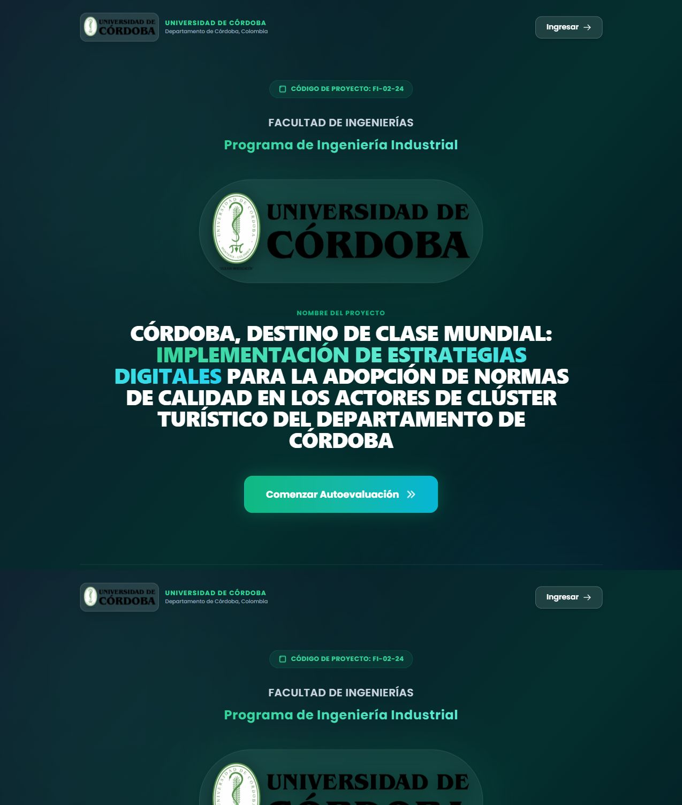
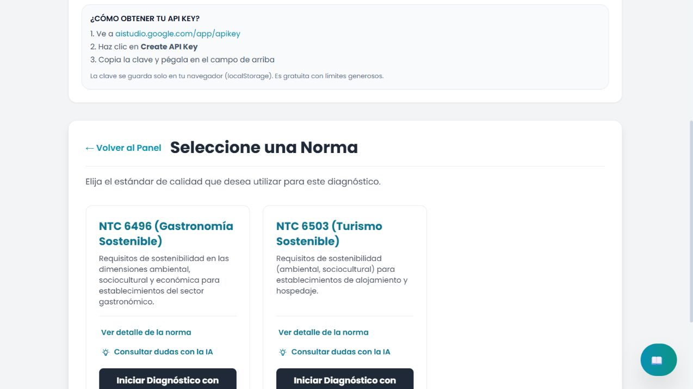
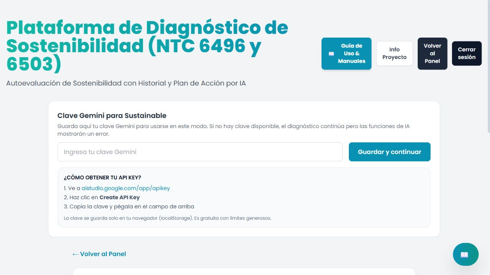
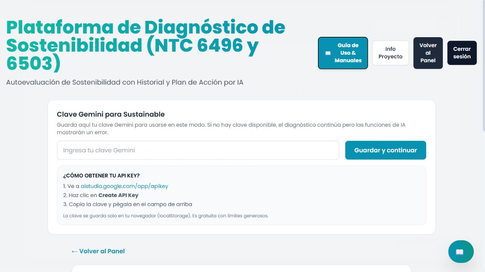

1. Objetivo y preparación
La plataforma permite conocer el nivel de cumplimiento de un establecimiento turístico y priorizar acciones de sostenibilidad ambiental, sociocultural y económica.
NTC 6496Establecimientos gastronómicos
Restaurantes y negocios de alimentos que desean revisar compras responsables, consumo de recursos, residuos y prácticas socioculturales.
NTC 6503Alojamiento y hospedaje
Hoteles, hostales y otros alojamientos que evalúan su gestión sostenible y su relación con el destino.
Antes de comenzar
- Use un navegador actualizado y conexión estable a internet.
- Tenga disponibles NIT o identificación, datos del establecimiento y responsable de la evaluación.
- Reúna políticas, permisos, facturas, registros de consumos, manejo de residuos y soportes de capacitación.
- La clave Gemini es opcional; sin ella se puede completar el diagnóstico, pero no usar las funciones de IA.
1Ingresar
2Elegir norma
3Responder
4Analizar y mejorar

2. Acceso y registro
- En la portada, seleccione Ingresar o Comenzar Autoevaluación.
- Escriba el usuario y la contraseña registrados.
- Seleccione Iniciar sesión.
- Si no tiene cuenta, abra Crear una cuenta (Registrarse), complete los tres campos y confirme.
Protección de acceso: no comparta su contraseña ni la incluya en informes, capturas o repositorios. La aplicación valida el acceso mediante el backend.


3. Panel principal
El panel reúne los diagnósticos guardados y los accesos de trabajo:
- + Nuevo Diagnóstico: inicia una evaluación.
- Guía de Uso & Manuales: abre la ayuda integrada y los documentos normativos.
- Tour Guiado: explica los controles principales sobre la misma interfaz.
- Clave Gemini: activa las consultas y el plan de acción con IA. No es obligatoria.

4. Crear un nuevo diagnóstico
- Seleccione + Nuevo Diagnóstico.
- Elija NTC 6496 para gastronomía o NTC 6503 para alojamiento.
- Si necesita más información, use Ver detalle de la norma.
- Seleccione Iniciar Diagnóstico con esta Norma.
- Complete identificación, nombre, sector, departamento, ciudad, fecha de fundación, responsable y tamaño.
- Revise la información y continúe al cuestionario.
Elección correcta: la norma seleccionada determina las cláusulas, preguntas y evidencias que aparecerán. Si eligió una norma equivocada, vuelva al panel antes de diligenciar.


5. Diligenciar el cuestionario
Las preguntas están organizadas por cláusulas. Seleccione el estado que mejor represente la situación real y marque únicamente evidencias verificadas.
| Estado | Uso recomendado |
|---|---|
| Cumple | La práctica está implementada y cuenta con evidencia. |
| Parcialmente | Existen avances, pero faltan controles, formalización o registros. |
| No cumple | No se ha implementado el requisito o no existe soporte. |
| No aplica | El requisito no corresponde al establecimiento; justifique la decisión. |
Buenas prácticas
- Revise cada cláusula con la persona responsable del proceso.
- Use los comentarios para registrar hallazgos, ubicación de soportes y tareas pendientes.
- No marque una evidencia solo porque “debería existir”; confirme el documento o registro.
- El asistente contextual puede sugerir ejemplos, pero la decisión final corresponde al evaluador.
6. Resultados, plan de acción e informe
- Complete todas las cláusulas y seleccione Finalizar Diagnóstico.
- Revise el porcentaje global y el desempeño por cláusula.
- Priorice los requisitos en estado Parcialmente o No cumple.
- Si configuró Gemini, genere el plan de acción con IA y valide cada recomendación.
- Guarde el diagnóstico y descargue el PDF desde la vista de resultados.
- Use el historial para comparar una evaluación posterior con la línea base.
Interpretación: el resultado es una herramienta de autodiagnóstico. No reemplaza una auditoría de certificación ni la revisión de un profesional competente.
7. Ayuda, solución de problemas y seguridad

| Situación | Qué hacer |
|---|---|
| No puede iniciar sesión | Verifique usuario, contraseña, conexión y dirección del backend. No use credenciales de ejemplo. |
| La IA no responde | Confirme que ingresó una clave Gemini válida y que tiene conexión a internet. |
| No aparecen diagnósticos | Confirme que inició sesión con el mismo usuario y que el backend está disponible. |
| El PDF no se descarga | Permita descargas y ventanas emergentes para el sitio, luego inténtelo nuevamente. |
Lista de verificación antes de cerrar
- Norma correcta seleccionada.
- Datos del establecimiento revisados.
- Todas las cláusulas respondidas.
- Evidencias confirmadas.
- Comentarios registrados.
- Resultados revisados.
- Plan de acción validado.
- Diagnóstico guardado o exportado.